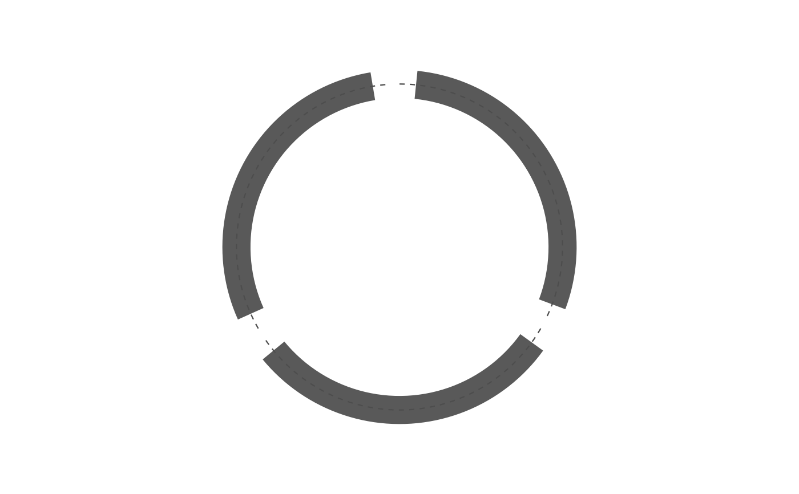

geom_hline() draws at yintercept on the angle axis, because a track's
y is an angle (spec sec.4.2). For a threshold in the band's own units use
this instead: value goes through the same normalisation the track's values
went through, so the line and the data always share one scale.
Usage
geom_track_hline(
mapping = NULL,
data = NULL,
stat = "identity",
position = "identity",
...,
band = NULL,
value,
linetype = "dashed",
linewidth = 0.4,
colour = "grey30",
na.rm = FALSE,
show.legend = NA,
inherit.aes = FALSE
)Arguments
- mapping, data, stat, position, na.rm, show.legend, inherit.aes
Standard
ggplot2::layer()arguments.datais optional; the nodes come from the plot's layout.- ...
Passed to
ggplot2::layer(), for further line settings.- band
The track to draw in: a declared band name, or
c(r0, r1). Defaults to the band of a track layer already on the plot.- value
Threshold in the track's value units, not radii. A vector draws several lines.
- linetype, linewidth, colour
Appearance of the line.
Details
The line is drawn per node – one arc inside each node's own span – so it reads as "this node's threshold" rather than a ring passing through the gaps.
Examples
links <- data.frame(from = c("a", "b"), to = c("b", "c"))
ggcircos(links, tracks = c(v = 0.2)) +
geom_track(data = data.frame(id = c("a", "b", "c"), v = c(0.2, 0.5, 0.8)),
aes(x = v), node = id, band = "v") +
geom_track_hline(band = "v", value = 0.5)
